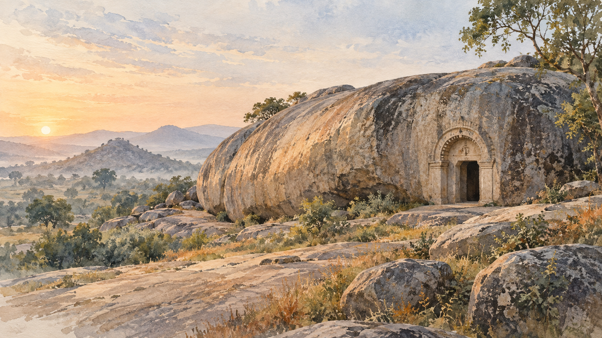
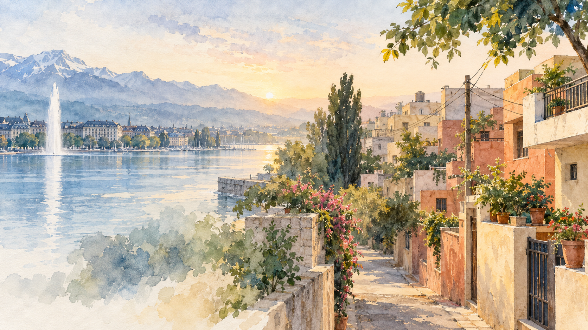
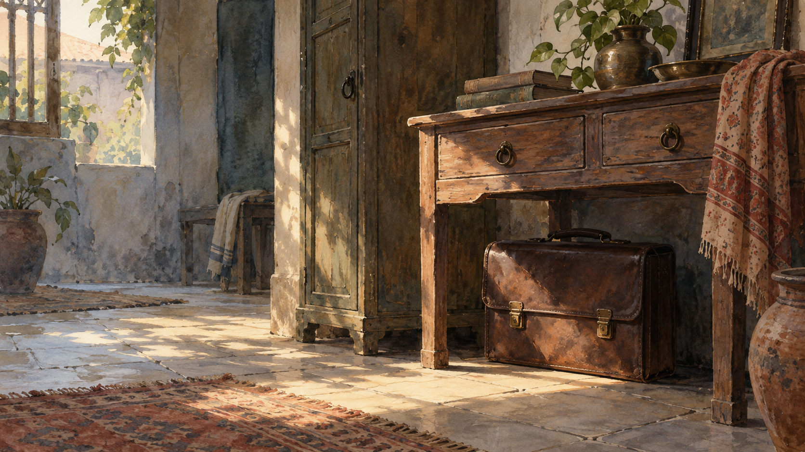
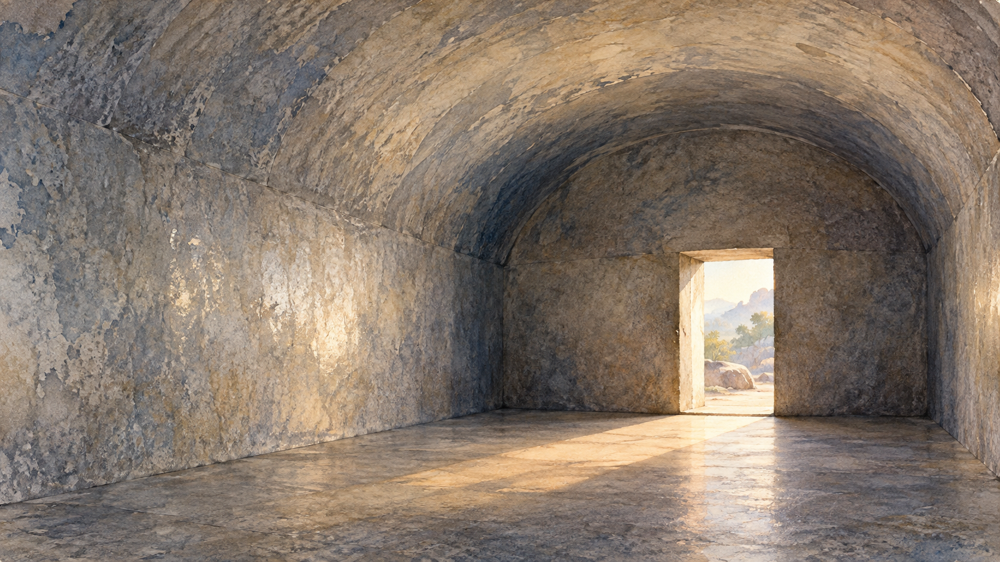
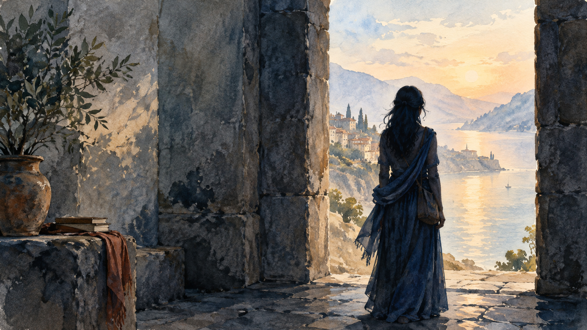

Un voyage entre deux mondes
PRIYA
PADMA
Sens unique
L’éveil
À vingt ans,
tout bascule.
Des pouvoirs psychiques.
Des secrets familiaux.

Le voyage
Un deuil.
Un départ
pour l’Inde.
Entre Genève et Faridabad.

Le secret
Dans la maison
de son enfance…
Une mallette cachée détient
les clés de la vérité.

Un lieu du roman · Inde
Les grottes
de Barabar

L’héritage
Un héritage
plus complexe
qu’elle ne
l’imaginait.
Des forces surnaturelles
l’attirent.
Découvrez le roman
PRIYA
PADMA
Sens unique
ISBN 9798332039683